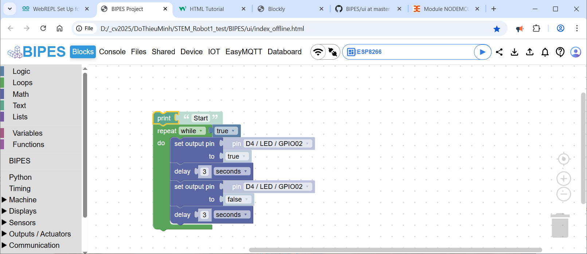

Lập trình block cho ESP32
I. Ứng dụng: BIPES
Nguồn
https://github.com/BIPES/BIPES
Cách chạy
- Clone về máy rồi chạy offline từ file (mở bằng browser): ui/index_offline.html
- Tạo online bằng cách tạo server để host project
II. Thử nghiệm
Chip: ESP8266
Kit: Module NODEMCU WIFI ESP8266 OLED NODEMCU 0.96 inch. Nguồn: chotroihn.vn -> PVX80329. (Nhiều nơi dừng kinh doanh)

Cách kết nối
Qua RS232 (USB)
Chọn Serial -> OK
Qua Wifi
Sửa file boot.py như sau:
# This file is executed on every boot (including wake-boot from deepsleep)
#import esp
#esp.osdebug(None)
import os, machine
#os.dupterm(None, 1) # disable REPL on UART(0)
import gc
import network
import time
import webrepl
def wifi_connect(ssid, pw):
wait_time = 0
wlan = network.WLAN(network.STA_IF)
wlan.active(True)
wlan.connect(ssid, pw)
while not wlan.isconnected():
time.sleep_ms(100)
wait_time += 100
if wait_time > 10000: return False
return True
if wifi_connect("LOVE U", "1234567890"):
import webrepl_setup
webrepl.start()
gc.collect()
Khởi động lại vđk bằng cách đánh lệnh: import boot ở shell
Làm theo hướng dẫn
Comment dòng lệnh: #import webrepl_setup
Vào Tool->Options->Interpreter->Nhập địa chỉ hiện ra trước đó và password đã dùng
Vấn đề:
- BIPES bị lỗi kết nối màn hình OLED 0.96
TODO:
Thử nghiệm với ESP32
Tạo block
Chức năng khoá block theo bài học?
Đổi màu giao diện?
Dịch?